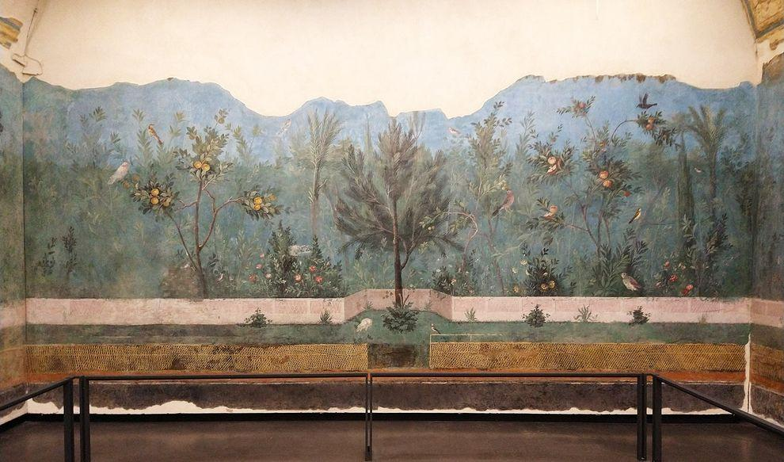
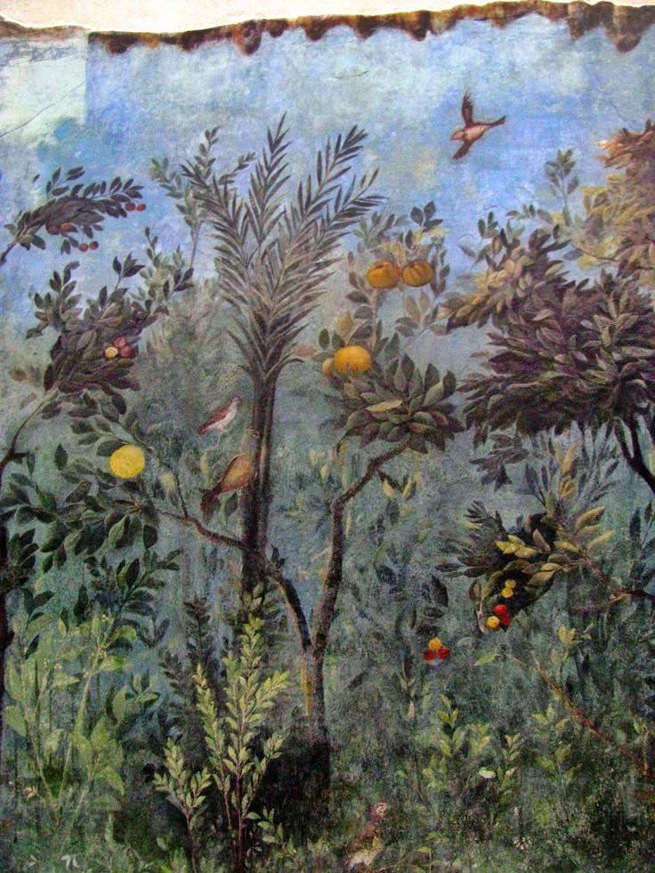
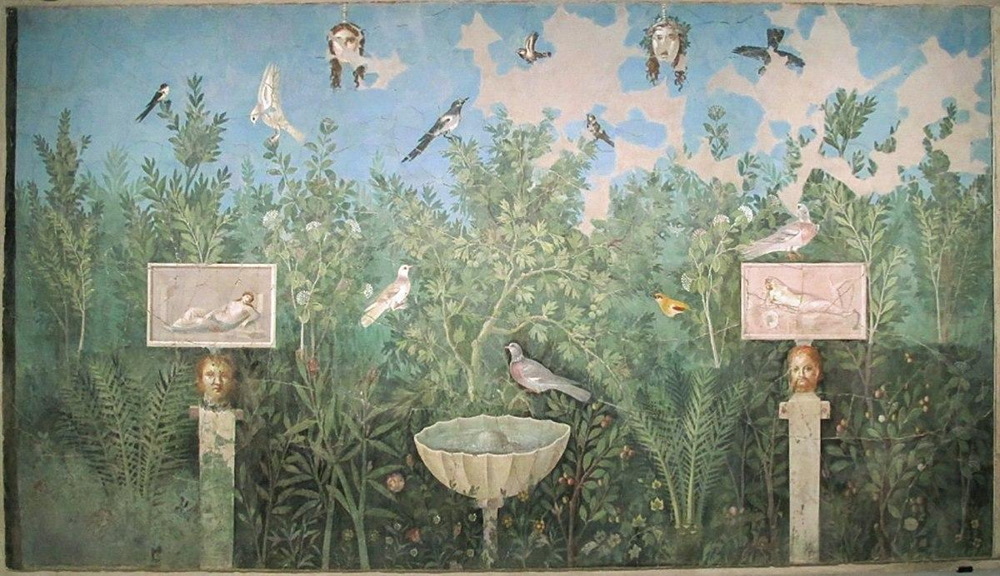
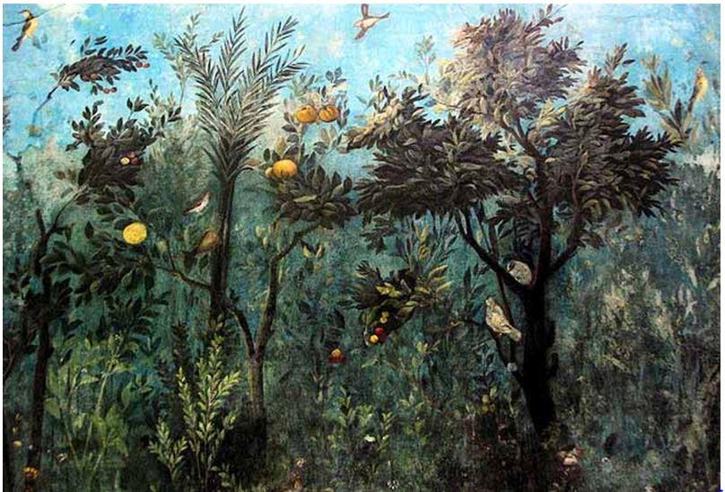
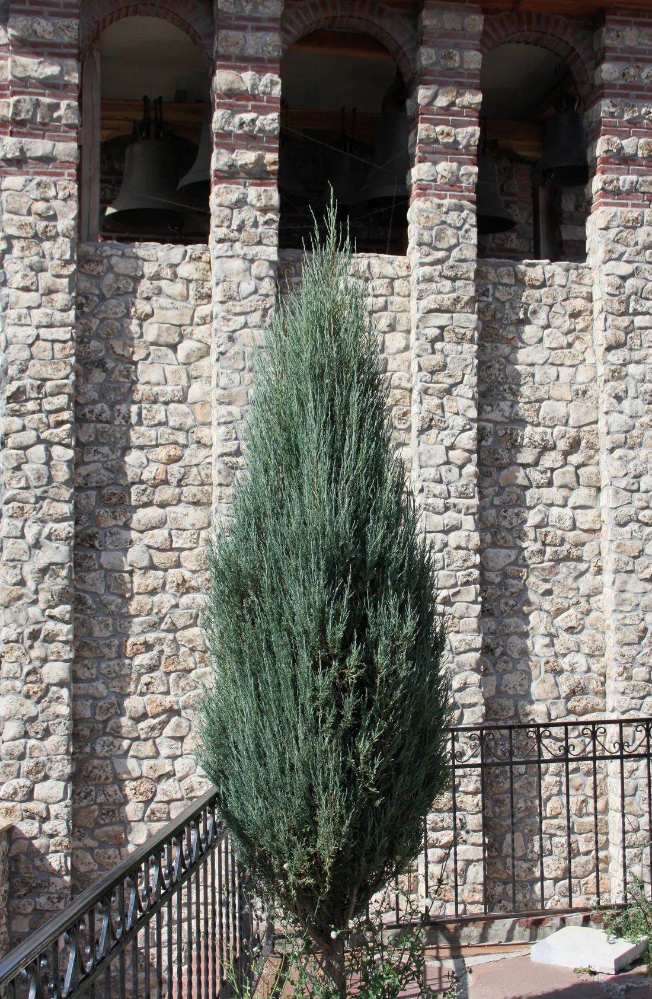
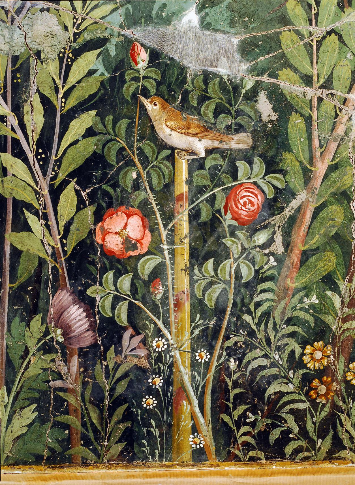

Ancient Roman Garden Design

Ancient Roman garden design transformed the garden into an extension of architecture, culture, and daily life. From the late Republic through the Roman Imperial period, approximately the 1st century BCE through the 4th century CE, gardens became increasingly sophisticated spaces associated with villas, townhouses, temples, public buildings, and imperial residences. The Roman garden, or *hortus*, could be productive, ornamental, sacred, or recreational. In wealthy households, however, it became something much more elaborate: a carefully composed landscape in which water, sculpture, architecture, plants, shade, and movement** were deliberately orchestrated. Roman designers drew upon earlier Greek and Hellenistic traditions while incorporating influences from the eastern Mediterranean and North Africa. The resulting landscape emphasized symmetry, axial views, enclosure, geometry, theatrical presentation, and the controlled relationship between architecture and nature. Rather than simply placing a house beside a garden, Roman designers often made the garden part of the architecture itself.
The Garden as a Stage
The Roman villa could be understood as a series of carefully arranged rooms and outdoor rooms. A visitor might enter through a monumental doorway, pass into a courtyard, walk beneath a colonnade, encounter a fountain or pool, and then proceed toward a garden beyond. Each transition revealed another framed view. The garden was consequently a kind of living theatre. Trees could frame sculptures. Columns could frame views of water. Hedges could conceal fountains until the visitor approached them. Paths could lead toward a distant statue or architectural feature. Pools could reflect buildings and vegetation. The landscape was designed not only to be seen but also to be experienced through movement.
Procession and Perspective
Roman gardens frequently exploited long visual axes.
A pathway might extend from the entrance of the villa toward:* A fountain
* A statue
* A temple
* A pavilion
* A distant landscape
* A pool
* A dramatic specimen tree
The visitor's movement through the garden gradually revealed these elements. This created a sense of **procession**, in which the garden unfolded as a sequence of carefully composed scenes.
The Peristyle Garden

One of the defining features of Roman domestic architecture was the peristyle—a garden courtyard surrounded by a covered colonnade. The peristyle created a powerful relationship between architecture and vegetation. Columns surrounded the garden, providing shade and creating a visual frame. From the rooms of the house, residents could look through the colonnade into the planted courtyard. This produced a sequence of contrasting elements: dark interior → shaded colonnade → bright garden → reflective water → distant landscape. The columns also established rhythm and repetition, while the garden softened the hard architectural geometry.
Water and Roman Engineering
Water was one of the defining achievements of Roman landscape design. Roman engineers developed extensive systems for transporting and distributing water, including aqueducts, reservoirs, lead and terracotta pipes, cisterns, fountains, and drainage systems. In an elite garden, water could be directed toward ornamental features such as:
* Pools
* Fountains
* Basins
* Water channels
* Cascades
* Decorative jets
* Reflecting surfaces
Water therefore became both infrastructure and art. A fountain could serve as the focal point of a garden, while a pool could establish an important axis. Moving water provided sound and cooling, while still water reflected the surrounding architecture. The Roman achievement was not simply bringing water into the garden—it was making water visible as part of the garden's design.
Pools and Reflecting Water
Rectangular and geometric pools were particularly effective in formal gardens. Their straight edges reinforced the architecture of the villa, while the organic movement of water and surrounding plants softened the rigid geometry. A pool could be positioned directly in front of a colonnade, sculpture, or building façade. This created a layered composition: architecture → columns → water → plants → sky The reflective surface effectively doubled the visual presence of the surrounding landscape.
Topiary and the Art of Shaping Nature
One of the most recognizable characteristics of Roman garden design is topiary—the deliberate clipping and shaping of trees and shrubs into geometric or figurative forms. Evergreen plants could be shaped into:
* Spheres
* Cones
* Columns
* Cubes
* Animals
* Architectural forms
* Ornamental screens
Topiary expressed an important Roman idea: nature could be disciplined into art. The contrast between a living plant and a precisely geometric form made topiary particularly effective in formal gardens. It also reinforced the broader Roman preference for order, symmetry, and controlled composition.
Hedges and Garden Boundaries
Hedges helped divide the garden into separate spaces. Rather than allowing the entire landscape to be visible at once, Roman designers could create a succession of enclosed garden rooms. A hedge might conceal a fountain or statue until the visitor reached a particular point. Another might establish a boundary around a flower garden or orchard. This created surprise and discovery within an otherwise highly ordered landscape.
Colonnades and Shade
Colonnades were essential to the Roman garden experience. The Mediterranean climate made shade particularly valuable, and the covered walkway around a peristyle provided a comfortable place to walk, sit, converse, and observe the garden. The columns also created a distinctive architectural rhythm. Sunlight passing between the columns produced alternating bands of light and shadow, making the garden visually dynamic throughout the day. The contrast between:
* Stone and vegetation
* Light and shadow
* Architecture and nature
* Still water and moving water
* Geometric forms and organic growth
was central to the Roman aesthetic.
Sculpture and Mythology

Roman gardens were frequently populated with sculpture. Statues of gods, goddesses, mythological figures, athletes, philosophers, animals, and decorative figures could be positioned throughout the landscape. Popular subjects included Venus, Apollo, Mercury, Bacchus, Diana, Hercules, and nymphs. Sculpture was often positioned strategically rather than randomly. A statue at the end of an avenue could become a visual destination, while a figure beside a fountain could connect the water with mythology. The garden thus became an outdoor gallery.
Frescoes and the Illusion of Gardens
Roman fascination with gardens extended inside the house. Walls could be painted with elaborate garden scenes depicting trees, flowers, fountains, birds, architecture, and distant landscapes. The famous Garden Room at the Villa of Livia near Rome provides one of the finest examples of this tradition. Its walls depict an idealized garden filled with trees, flowering plants, birds, and fruit. The painted garden created the illusion that the architecture opened directly into an endless landscape. This demonstrates how strongly Roman culture associated the garden with beauty, abundance, escape, and pleasure.
Fruit Trees and the Productive Garden

Roman gardens were not exclusively ornamental. Fruit trees were important components of villa landscapes, combining practical productivity with beauty. Commonly cultivated plants included:
* Figs
* Grapes
* Olives
* Pomegranates
* Apples
* Pears
* Quinces
* Mulberries
* Dates in suitable climates
The fig tree was particularly important in Roman agriculture and culture. Vines could be trained over pergolas and colonnades, producing shade while also providing grapes. The Roman villa could therefore contain a sophisticated combination of pleasure garden, orchard, vineyard, kitchen garden, and ornamental landscape.
Citrus Trees: An Important Historical Qualification
Citrus deserves a small clarification when discussing Roman and later Italian garden design. Lemons, oranges, mandarins/tangerines, and many modern citrus varieties should not all be described as characteristic Roman garden trees during the 1st century BCE–4th century CE. Their histories in the Mediterranean are different, and several familiar citrus species became widespread much later. The citron was known in the ancient Mediterranean, and other citrus species arrived or became established over subsequent centuries. Sweet oranges and mandarins, in particular, belong primarily to later Mediterranean horticultural traditions. For a historical Roman garden reconstruction, it is therefore more accurate to emphasize plants such as fig, olive, grapevine, pomegranate, bay, cypress, laurel, myrtle, plane, and other Mediterranean species, while treating the familiar citrus collection as characteristic of later Italian garden traditions.
Cypress and Vertical Structure
Tall, narrow trees provided an important vertical counterpoint to the horizontal geometry of pools, paths, terraces, and hedges. Cypress was particularly important in Mediterranean landscapes. Its narrow silhouette could emphasize an entrance, frame an avenue, mark a boundary, or draw the eye upward. For a modern garden inspired by Roman and Italian design, narrow evergreen forms can perform a similar architectural function. The Skyrocket Juniper is a modern cultivar rather than an ancient Roman plant, but its extremely narrow, upright form can serve as a contemporary substitute for the vertical effect historically provided by cypress and other columnar evergreens.
The Roman Courtyard Garden
The courtyard garden was especially important in urban Roman homes. A house could be organized around an internal garden that brought light, air, greenery, and water** into the center of the building. The courtyard became a private oasis within the city.

Planting could include:* Small trees
* Shrubs
* Roses
* Vines
* Herbs
* Flowers
* Topiary
* Potted plants
* Fountains
The walls of the surrounding building provided protection and enclosure, creating an intimate garden environment.
The Villa Garden

Outside the city, wealthy Romans developed much larger villa landscapes. A villa could contain several distinct garden areas:Formal garden — geometric planting, fountains, sculpture, and clipped hedges.
Orchard— productive fruit trees.
Vineyard — vines trained on supports and pergolas.
Kitchen garden — vegetables, herbs, and useful plants.
Sacred garden — associated with religious practices or household shrines.
Pleasure garden — designed primarily for relaxation and entertainment.
This combination illustrates how Roman landscape design could move seamlessly between utility and ornament.
The Garden as a Social Space
The garden was an important setting for Roman social life. Wealthy Romans could receive guests in garden courtyards, dine outdoors, walk beneath colonnades, or converse beside fountains. The garden provided an environment for:
* Dining
* Conversation
* Reading
* Music
* Entertaining
* Walking
* Relaxation
* Philosophical discussion
* Displaying art and wealth
A beautifully designed garden was therefore an extension of the owner's hospitality.Gardens and Public Life
Roman gardens were not exclusively private. Public and semi-public landscapes existed in connection with temples, baths, parks, porticoes, and other civic spaces. However, the statement that "many gardens were open to the public" during the entire 1st century BCE–4th century CE is too broad. Access varied considerably according to the type of garden, its owner, and its location. Imperial and civic landscapes could be experienced by broader sections of society, while many villa and domestic gardens remained private.
The Roman Love of Contrast
Perhaps the most useful principle for recreating a Roman garden is contrast. Roman gardens juxtaposed:
Hard stone / Soft foliage
Straight walkways / Organic plants
Bright sunlight / Deep shade
Still water / Moving water
Geometric topiary / Free-growing trees
Architecture / Nature
Public grandeur / Private retreat
These contrasts gave the garden its theatrical quality.
Plants for a Roman-Inspired Garden
Trees
* Olive
* Fig
* Cypress
* Pomegranate
* Bay laurel
* Myrtle
* Plane
* Mulberry
* Pine
* Almond
Vines
* Grape
* Climbing roses
* Ivy
Herbs
* Rosemary
* Lavender
* Thyme
* Sage
* Oregano
* Marjoram
* Fennel
* Bay
Flowers
Roses
Violets
Lilies
Iris
Poppies
Narcissus
Crocus
Architectural Evergreens
* Cypress
* Yew
* Juniper
* Laurel
* Myrtle
For an Okanagan-inspired interpretation, these historical principles can be adapted using plants suited to the local climate rather than attempting to reproduce every ancient species literally.
Key Principles of Ancient Roman Garden Design
1. Architecture and Landscape
Treat the garden as an extension of the villa.
2. Strong Geometry
Use rectangles, axes, symmetry, and repetition.
3. Peristyles
Surround gardens with columns and shaded walkways.
4. Water
Make fountains, pools, and channels major compositional elements.
5. Topiary
Shape evergreen plants into geometric and ornamental forms.
6. Sculpture
Use mythology and classical sculpture to create focal points.
7. Shade
Combine trees, colonnades, pergolas, and architectural structures.
Create visual journeys terminating in fountains, sculptures, trees, or buildings.
9. Productive Planting
Integrate orchards, vineyards, herbs, and edible plants with ornamental gardens.
10. Garden Rooms
Divide the landscape into intimate spaces rather than revealing everything at once.
11. Reflection
Use water to mirror architecture, plants, and sky.
12. Contrast
Balance stone and greenery, sunlight and shade, geometry and natural growth.
The Roman garden established many of the principles that would later become fundamental to Italian Renaissance, Baroque, Mediterranean, and formal European garden design. Its enduring influence can be seen in the use of cypress avenues, clipped hedges, geometric parterres, fountains, reflecting pools, sculptures, terraces, colonnades, pergolas, and axial vistas. At its heart, the Roman garden was an exercise in transforming nature into a carefully composed experience. The Romans did not simply place plants around a building—they created a landscape in which architecture framed nature, water animated architecture, sculpture inhabited the garden, and movement revealed one carefully orchestrated scene after another. The result was a garden that functioned simultaneously as oasis, theatre, gallery, orchard, social space, and architectural extension of the home**.